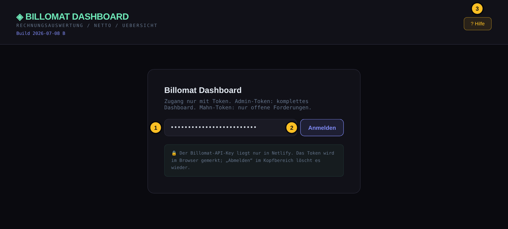
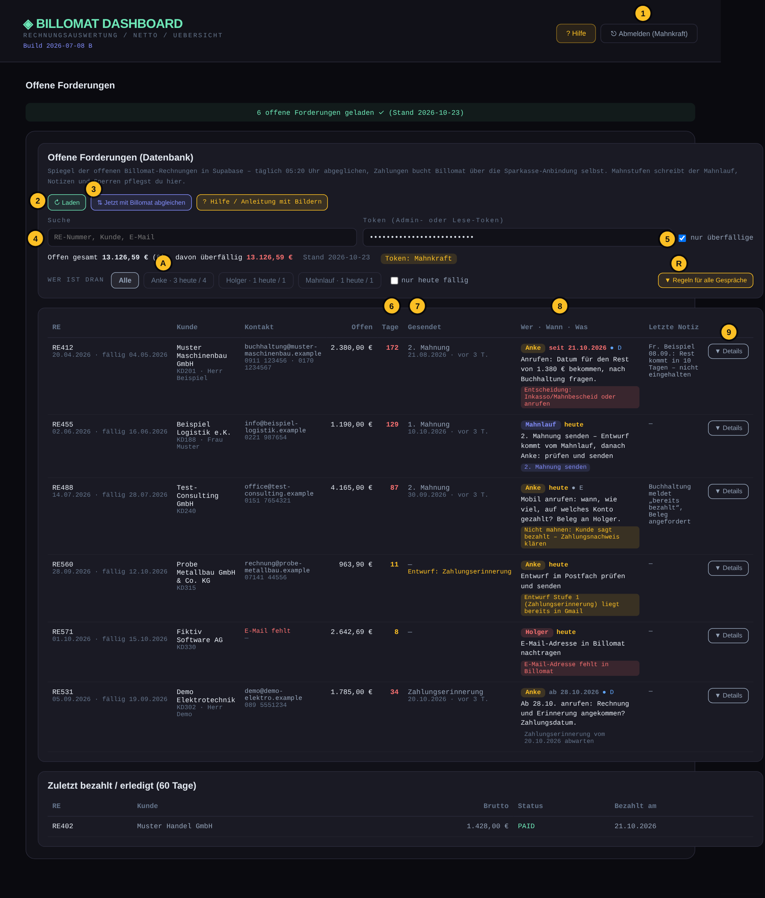
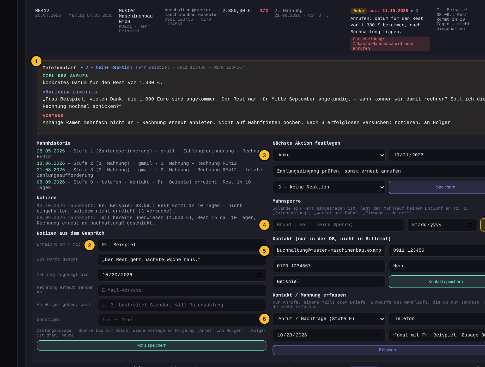
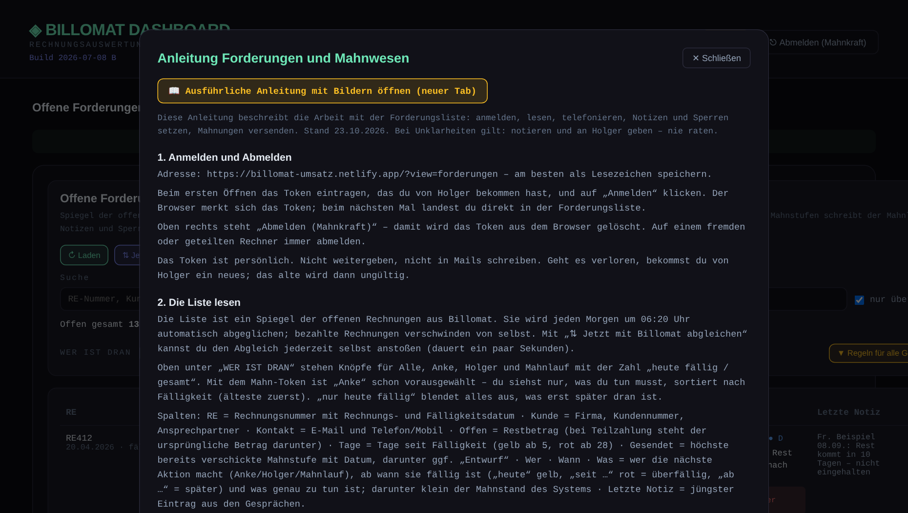

Überblick: So hängt alles zusammen
Zahlungen bucht Billomat über die Sparkasse-Anbindung selbst. Der Abgleich übernimmt jeden Morgen den Stand in die Datenbank; bezahlte Rechnungen verschwinden von selbst aus der Liste.
1. Anmelden und Abmelden
Adresse: https://billomat-umsatz.netlify.app/?view=forderungen – am besten als Lesezeichen speichern.
Beim ersten Öffnen das Token eintragen, das du von Holger bekommen hast, und auf „Anmelden“ klicken. Der Browser merkt sich das Token; beim nächsten Mal landest du direkt in der Forderungsliste.
Oben rechts steht „Abmelden (Mahnkraft)“ – damit wird das Token aus dem Browser gelöscht. Auf einem fremden oder geteilten Rechner immer abmelden.
Das Token ist persönlich. Nicht weitergeben, nicht in Mails schreiben. Geht es verloren, bekommst du von Holger ein neues; das alte wird dann ungültig.

2. Die Liste lesen
Die Liste ist ein Spiegel der offenen Rechnungen aus Billomat. Sie wird jeden Morgen um 06:20 Uhr automatisch abgeglichen; bezahlte Rechnungen verschwinden von selbst. Mit „⇅ Jetzt mit Billomat abgleichen“ kannst du den Abgleich jederzeit selbst anstoßen (dauert ein paar Sekunden).
Oben unter „WER IST DRAN“ stehen Knöpfe für Alle, Anke, Holger und Mahnlauf mit der Zahl „heute fällig / gesamt“. Mit dem Mahn-Token ist „Anke“ schon vorausgewählt – du siehst nur, was du tun musst, sortiert nach Fälligkeit (älteste zuerst). „nur heute fällig“ blendet alles aus, was erst später dran ist.
Spalten: RE = Rechnungsnummer mit Rechnungs- und Fälligkeitsdatum · Kunde = Firma, Kundennummer, Ansprechpartner · Kontakt = E-Mail und Telefon/Mobil · Offen = Restbetrag (bei Teilzahlung steht der ursprüngliche Betrag darunter) · Tage = Tage seit Fälligkeit (gelb ab 5, rot ab 28) · Gesendet = höchste bereits verschickte Mahnstufe mit Datum, darunter ggf. „Entwurf“ · Wer · Wann · Was = wer die nächste Aktion macht (Anke/Holger/Mahnlauf), ab wann sie fällig ist („heute“ gelb, „seit …“ rot = überfällig, „ab …“ = später) und was genau zu tun ist; darunter klein der Mahnstand des Systems · Letzte Notiz = jüngster Eintrag aus den Gesprächen.
„Nächste Aktion“ bedeutet: „Zahlungserinnerung/1. Mahnung/2. Mahnung senden“ = Mahnung ist fällig, der Entwurf liegt (ab dem nächsten Morgen) im Postfach · „… abwarten“ = Mahnung ist raus, Frist läuft noch · „Entwurf … liegt bereits in Gmail“ = bitte diesen Entwurf prüfen und senden · „Nicht mahnen: …“ = Mahnsperre, Grund steht dahinter · „Entscheidung: Inkasso/Mahnbescheid oder anrufen“ = alle Mahnstufen durch, Holger entscheidet · „E-Mail-Adresse fehlt in Billomat“ = Holger muss die Adresse in Billomat nachtragen.
Das Häkchen „nur überfällige“ blendet Rechnungen aus, die noch nicht fällig sind. Die Suche findet Rechnungsnummer, Kunde, Kundennummer, E-Mail und Ansprechpartner.

- ? Hilfe / Abmelden – Anleitung öffnen; Abmelden löscht das Token aus dem Browser.
- Laden – Liste neu aus der Datenbank holen.
- Jetzt mit Billomat abgleichen – holt den aktuellen Stand aus Billomat (bezahlte Rechnungen verschwinden).
- Suche – Rechnungsnummer, Kunde, Kundennummer, E-Mail, Ansprechpartner.
- nur überfällige – wirkt in der Ansicht „Alle“.
- Tage – Tage seit Fälligkeit: gelb ab 5, rot ab 28.
- Gesendet – höchste verschickte Mahnstufe mit Datum; „Entwurf: …“ heißt vorbereitet, nicht gesendet.
- Wer · Wann · Was – wer dran ist, ab wann („heute“, rot „seit …“ = überfällig, „ab …“ = später), was zu tun ist; darunter klein der Mahnstand.
- Details – Telefonblatt, Historie, Notizen, nächste Aktion, Sperre, Kontakt.
A = „Wer ist dran“: Alle / Anke / Holger / Mahnlauf mit „heute fällig / gesamt“. Mit dem Mahn-Token ist Anke vorausgewählt. R = „Regeln für alle Gespräche“ und die Kategorien A–F zum Aufklappen.
| Nächste Aktion | Bedeutung | Du tust |
|---|---|---|
| Zahlungserinnerung / 1. Mahnung / 2. Mahnung senden | Mahnung ist fällig | Entwurf liegt ab dem nächsten Morgen im Postfach – prüfen, senden |
| … abwarten | Mahnung ist raus, Frist läuft | nichts – außer der Kunde hat eine Zusage gebrochen |
| Entwurf … liegt bereits in Gmail | vorbereitet, aber nicht gesendet | Entwurf im Postfach prüfen und senden |
| Nicht mahnen: … | Mahnsperre mit Grund | nicht mahnen; ggf. nach Fristablauf anrufen |
| Entscheidung: Inkasso/Mahnbescheid oder anrufen | alle Stufen durch | Anrufen, Ergebnis notieren – Entscheidung trifft Holger |
| E-Mail-Adresse fehlt in Billomat | keine Adresse hinterlegt | Adresse erfragen, Notiz „E-Mail in Billomat ändern auf …“ |
3. Dein Tagesablauf
Morgens: Im Postfach Mahnungen@iso9001.info liegen die vom Mahnlauf vorbereiteten Entwürfe (Betreff „Zahlungserinnerung – Rechnung RE…“, „1. Mahnung – …“, „2. Mahnung – …“). Jeden Entwurf kurz prüfen (richtiger Empfänger, Betrag stimmt mit der Liste überein) und senden. Du musst nichts eintragen – der Mahnlauf erkennt am nächsten Morgen, dass der Entwurf gesendet wurde.
Dann „Anke“ und „nur heute fällig“ wählen und die Liste von oben nach unten abarbeiten – die Reihenfolge ergibt sich aus der Wiedervorlage. Was erst „ab …“ fällig ist, bleibt liegen.
Nach jedem Kontakt – auch nach einem erfolglosen Anrufversuch – sofort eine Notiz schreiben (Abschnitt 4) und den Kontakt erfassen (Abschnitt 6). Was nicht in der Liste steht, ist für Holger unsichtbar.
Vor dem Anruf immer „▼ Details“ öffnen: Oben steht das Telefonblatt mit ZIEL DES ANRUFS, MÖGLICHEM EINSTIEG (wörtlich formuliert) und ACHTUNG (was schiefgehen kann), darunter Mahnhistorie und alle bisherigen Notizen. Wer zweimal eine Zusage gebrochen hat, bekommt keine dritte ohne konkretes Datum.
Nach dem Gespräch legst du unter „Nächste Aktion festlegen“ fest, wer als Nächstes dran ist und wann (z. B. Anke, 30.10., „erneut anrufen“). Damit taucht der Fall genau an diesem Tag wieder oben auf – du musst dir nichts merken.
4. Notiz schreiben
„▼ Details“ öffnen, links unter „Notizen aus dem Gespräch“ die Felder ausfüllen (wie in der Telefonmappe): Erreicht am / mit wem · Was wurde gesagt (möglichst wörtlich) · Zahlung zugesagt bis (Datum) · Rechnung erneut senden an · An Holger geben, weil · Sonstiges. Leere Felder bleiben weg. „Notiz speichern“ – Datum und dein Name (mahnkraft) kommen automatisch dazu.
Das System zieht daraus die Folgen: Bei „Zahlung zugesagt bis“ wird bis zu diesem Datum nicht gemahnt und der Fall am Folgetag wieder dir vorgelegt („Zahlungseingang prüfen“). Bei „An Holger geben, weil“ ist ab sofort Holger dran. Bei „Rechnung erneut senden an“ bekommt Holger die Aufgabe, die Rechnung zu schicken.
Beispiel: „Fr. Zeck erreicht. Rest 1.033,83 € wird bis 30.10. überwiesen, Rechnung erneut an buchhaltung@waagen-zeck.de schicken.“ – Beispiel bei Nichterreichen: „Festnetz 2x, Mobil 1x versucht, Sprachbox, keine Nachricht hinterlassen.“
Nicht in die Notiz: eigene Vermutungen oder Urteile über den Kunden. Nur was gesagt und vereinbart wurde.

- Telefonblatt – Ziel des Anrufs, möglicher Einstieg (wörtlich), Achtung. Vor jedem Anruf lesen.
- Notizen aus dem Gespräch – Felder wie in der Telefonmappe; „Zahlung zugesagt bis“ setzt automatisch Sperre und Wiedervorlage.
- Nächste Aktion festlegen – wer, wann, was, Kategorie. Der Fall erscheint am gewählten Tag wieder oben.
- Mahnsperre – Grund und optional Datum, „Setzen“. Leeren und „Setzen“ hebt sie auf.
- Kontakt – Telefon, Mobil, Anrede, Nachname (E-Mail ändert Holger in Billomat).
- Kontakt / Mahnung erfassen – Anrufe, eigene Mails, Briefe in die Mahnhistorie.
| Kategorie | Bedeutung | Wer |
|---|---|---|
| A | wartet auf BAFA-Zuschuss – kein Säumnisfall | Holger |
| B | inhaltlicher Einwand (Leistung, Stunden, Preis) | nur Holger |
| C | Rechnung hat den Kunden nicht erreicht | Anke: neu senden lassen |
| D | keine Reaktion | Anke |
| E | Lage ungeklärt (z. B. „schon bezahlt“) | Anke klärt, Holger entscheidet |
| F | Aufschub zugesagt – nicht vor dem Datum anrufen | Anke nach Ablauf |
5. Mahnsperre setzen oder aufheben
Eine Mahnsperre verhindert, dass der Mahnlauf die nächste Mahnung vorbereitet. Setzen, wenn: der Kunde eine Zahlung zu einem konkreten Datum zugesagt hat · eine Ratenzahlung vereinbart ist (nur Holger darf das zusagen) · der Kunde auf eine BAFA-Auszahlung wartet · der Kunde die Rechnung bestreitet (Grund „Einwand – Holger“).
Im Detailbereich rechts: Grund eintragen (z. B. „Zahlung zugesagt bis 30.10.“), optional ein Datum – bis dahin gilt die Sperre, danach läuft das Mahnwesen automatisch weiter. Ohne Datum gilt die Sperre, bis sie entfernt wird. Dann „Setzen“.
Aufheben: Grund-Feld leeren, Datum leeren, „Setzen“. In der Liste erscheint die Sperre unter „Nächste Aktion“ als „Nicht mahnen: …“.
6. Kontakt oder Mahnung erfassen
Im Detailbereich „Kontakt / Mahnung erfassen“: Stufe wählen (Anruf/Nachfrage, Zahlungserinnerung, 1. Mahnung, 2. Mahnung, letzte Frist), Kanal (Telefon, E-Mail, WhatsApp, Brief), Datum (vorbelegt mit heute), kurzer Vermerk, „Erfassen“. So landen auch Anrufe und selbst geschriebene Mails in der Mahnhistorie.
Mahnungen, die aus den Entwürfen des Mahnlaufs gesendet wurden, musst du NICHT erfassen – die erkennt das System selbst. Erfassen nur, was du ohne Entwurf gemacht hast (Anruf, eigene Mail, Brief).
„Kontakt (nur in der DB)“: Telefonnummern, Mobilnummer, Anrede und Nachname kannst du hier ergänzen – sie werden für die Liste und die Anrede in Mahnungen genutzt. Eine falsche oder fehlende E-Mail-Adresse kann nur Holger in Billomat korrigieren; dafür bitte eine Notiz „E-Mail in Billomat ändern auf …“ schreiben.
7. Mahnstufen und Fristen
Stufe 0 „Nachfrage“: freundliche Nachfrage oder Anruf, zählt nicht als Mahnung.
Stufe 1 „Zahlungserinnerung“: ab 5 Tagen nach Fälligkeit, wenn noch nichts gesendet wurde.
Stufe 2 „1. Mahnung“: ab 14 Tagen nach Fälligkeit und frühestens 9 Tage nach der Zahlungserinnerung, mit Frist heute + 7 Tage.
Stufe 3 „2. Mahnung – letzte Zahlungsaufforderung“: ab 28 Tagen und frühestens 14 Tage nach der 1. Mahnung, mit Frist heute + 7 Tage.
Stufe 4 „Letzte Frist“: nur durch Holger. 10 Tage nach der 2. Mahnung ohne Zahlung zeigt die Liste „Entscheidung: Inkasso/Mahnbescheid oder anrufen“ – ab hier keine weiteren Mails, der Fall geht an Holger.
Antwortet ein Kunde auf eine Mahnung (Zahlung angekündigt, Reklamation, Ratenbitte), wird keine nächste Stufe vorbereitet, sondern der Fall als „Klären“ markiert. Dann: Notiz, ggf. Sperre, bei Einwand an Holger.
| Stufe | Name | Wann | Frist |
|---|---|---|---|
| 0 | Nachfrage / Anruf | jederzeit, zählt nicht als Mahnung | – |
| 1 | Zahlungserinnerung | ab 5 Tagen nach Fälligkeit | „in den nächsten Tagen“ |
| 2 | 1. Mahnung | ab 14 Tagen, frühestens 9 Tage nach Stufe 1 | heute + 7 Tage |
| 3 | 2. Mahnung – letzte Zahlungsaufforderung | ab 28 Tagen, frühestens 14 Tage nach Stufe 2 | heute + 7 Tage |
| 4 | Letzte Frist / Entscheidung | 10 Tage nach Stufe 3 ohne Zahlung | nur Holger |
8. Regeln für jedes Gespräch
Ziel ist immer ein konkretes Zahlungsdatum oder die Auskunft, was der Zahlung im Weg steht.
Keine Nachlässe, keine Ratenzahlung, keine neue Frist zusagen – das entscheidet nur Holger. Vorschläge des Kunden notieren und weitergeben.
Keine Aussagen zu Verzugszinsen, Mahnverfahren, Inkasso oder rechtlichen Schritten – auch nicht, wenn danach gefragt wird.
Am Telefon niemals unsere Bankverbindung nennen oder bestätigen. Will ein Kunde die IBAN „nur abgleichen“ oder behauptet, er habe schon bezahlt: nach Datum, Betrag und Empfängerkonto fragen, um einen Überweisungsbeleg per Mail bitten, Notiz schreiben, an Holger. Nennt er ein Konto, das nicht unseres ist, Gespräch freundlich beenden und Holger sofort informieren.
Bestreitet ein Kunde Leistung, Stunden oder Preis: nicht diskutieren, Wortlaut notieren, Sperre „Einwand – Holger“ setzen.
Immer anbieten, die Rechnung erneut per Mail zu schicken, und die richtige Rechnungsadresse erfragen – viele Verzögerungen sind nur verlorene Mails.
Freundlich bleiben. Die meisten Kunden sind Stammkunden, die wiederkommen sollen.
9. Was an Holger geht
Einwände gegen Rechnung, Stunden oder Preis · Bitten um Ratenzahlung, Nachlass oder längere Frist · „schon bezahlt“ mit Bitte um IBAN-Bestätigung · Fälle mit „Entscheidung: Inkasso“ · fehlende oder falsche E-Mail-Adresse in Billomat · Fragen zu BAFA/Fördermitteln, Zertifikaten oder Audits.
Weitergabe immer über eine Notiz in der Liste (Holger sieht jede Notiz) – bei dringenden Dingen zusätzlich per WhatsApp/Telefon an Holger: +49 1579 2316673.
10. Wenn etwas nicht geht
„Token ungültig“: Token noch einmal genau eintragen (keine Leerzeichen). Bleibt es dabei, hat Holger den Zugang gesperrt oder erneuert – bei ihm melden.
Liste leer oder „Laden“ bringt nichts: erst „⇅ Jetzt mit Billomat abgleichen“, dann „↻ Laden“. Kommt eine rote Fehlermeldung „Server not configured“ oder „Billomat GET failed“, liegt es an der Serverseite – Holger informieren.
Ein Kunde ist in der Liste, hat aber laut eigener Aussage bezahlt: Abgleich anstoßen. Ist die Rechnung in Billomat als bezahlt gebucht, verschwindet sie. Wenn nicht: Notiz mit Datum und Betrag der angeblichen Zahlung, an Holger.
Die Seite sieht alt aus oder es fehlen Knöpfe: Seite neu laden (Strg+F5).
